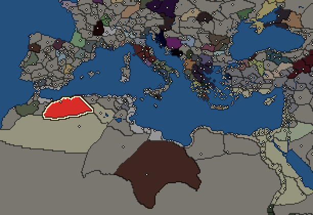

RTR: Imperium Surrectum
RTR: Imperium SurrectumMasaesyli


- difficulty Very Difficult
- Libyan culture
- believes
 Libyan
Libyan - 1 settlement
- capital Siga
- 5,000 manpower
- 2 characters
- 12 faction units
- 434 regional units
The campaign brief
"Tiberius (Sempronius Longus) now recalled his cavalry, perceiving that they could not cope with the enemy, as the Numidians easily scattered and retreated, but afterwards wheeled round and attacked with great daring — these being their peculiar tactics." – Polybios III.72.10
In the beginning was he who opposes, the great Änti, son of Poseidon and Gaia. Him we call our hero, albeit of times long past. Just like us, the Masaesyli, he was invincible as long as he didn’t lose touch with the hallowed sands we call our own! Far away, in a distant desert, your hooves might lead you to the sacred place called Msoura. Look at the imposing stones; behold the mightiest of all, whom our local elders claim to be the tomb of the great Änti! Taller than the grandest palm tree, protector of our land and people against invaders old and new. Collector of skulls – so much better suited than marble for a proper temple, the spoils of warriors to honour our venerable and brave ancestors!
Is it not sadly fitting that he who opposes, he who could not be beaten, was slain through the sly trickery of one of these Greeks, unwanted trespassers from faraway coasts? Herakles was his name, half-god – HAH! Half-wit rather! – who tricked our great Änti by lifting him from the sacred sands that gave him his strength. Is it not from the East that danger ever looms? Is it not from the realm of the rising sun that our people might expect their misery?
To the East we also find our brethren and dearest rivals, the Massylii. Some say they are even more proficient horsemen than us, but we know better of course. Who dares face our fierce javelinmen in battle? Don’t these Phoenician invaders empty their purses to the very bottom of gold and silver and whatever they can find, only to secure our allegiance? Is there an enemy that could cope with us, we Masaesyli who share every single breath with our dear horses from childhood, our closest friends, who would never desert us in an hour of need?
Times are changing. Our wise try and consult the ancestors, pondering the mysteries of Tifinagh, secrets not even you or me or any of our brave warriors can understand. All we need to know is the dull beat of the hoof on the sand. Sharpen your spears! Summon the courage of old, let us be the likes of Änti himself! For in the desert, only he can rule who wrestles and wins…
Starting settlements
Masaesyli begins with 1 settlement and 5,000 manpower.
What is already built in each settlement
Siga, in Shigan: Governor's House, Region Information Scroll, Training Grounds
Starting diplomacy
Masaesyli begins the campaign with no allies, no trade agreements and no wars.
Like every faction, it is also at war with the  Free Peoples, who hold every settlement no faction does.
Free Peoples, who hold every settlement no faction does.
Starting characters
| Name | Role | Age | Name | Role | Age | ||||||
|---|---|---|---|---|---|---|---|---|---|---|---|
| Vermina | General | 25 | Yutpan | General | 23 |
Reforms
For every faction: Military innovations have arrived!, Second wave of military innovations have arrived!.
Units you can recruit
The same as in the main campaign.